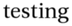
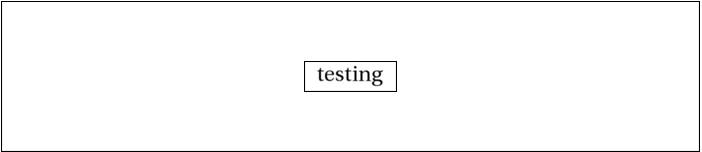

Toon-o-Matic run Sun Jan 18 08:17:54 PST 2009
interpret_script.pl runs:
Script specification
testing
Interpretation follows:
testing
I have no idea what this means.
Well, this script was entirely devoid of content the Toon-o-Matic could parse.
The Toonbot will write a script.
Making implict panel.
Resulting XML definition:
<cartoon rowformat="1" width="700" panel-h="150" character-base-url="http://www.vivtek.com/toonbots/characters/"> <panel> <caption location="middle">testing</caption> </panel> </cartoon>
instantiate.pl runs, but doesn't really do anything yet.
build_panel_make.pl runs.
Scene default:
<scene id="default" panels="1"/>
Panel Makefile is as follows:
# Panel Makefile generated Sun Jan 18 08:17:55 PST 2009 by Toon-o-Matic t2 # Contains no serviceable parts. Batteries not included. # Void in NH, VT, and U.S. Minor Outlying Islands. all: panel-1.svg panel-1.svg: caption-1-1.svg perl build_panel_g.pl panel-1.xml 1 1 > panel-1-g.svg perl merge_svg.pl "panel 1" panel-1-g.svg caption-1-1.svg > panel-1.svg placement-panel-1.xml: perl place_characters.pl "panel 1" 698 150 > placement-panel-1.xml caption-1-1.info: caption-1-1.xml perl render_text.pl caption-1-1.xml caption-1-1.png identify -format '<graphic size="%b" height="%h" width="%w" geometry="%g" file="%f"/>' caption-1-1.png > caption-1-1.info caption-1-1.svg: caption-1-1.info perl draw_caption.pl caption-1-1.xml caption-1-1.info 698 150 0 caption-1-1.png > caption-1-1.svgrender_text.pl renders "caption-1-1.xml":
<caption location="middle">testing</caption>
draw_caption.pl runs:
Graphics info:
<graphic width="72" file="caption-1-1.png" geometry="2500x320+21+6" height="26" size="6108"/>
<g transform="translate(303,60)" x="303" y="60" w="92" h="30"> <rect x="0" y="0" width="92" height="30" style="stroke:black; stroke-width:1; fill:white"/> <image x="10" y="2" width="72" height="26" xlink:href="caption-1-1.png"/> </g>
build_panel_g.pl runs, producing:
<g transform="translate(1,1)"/>
merge_svg.pl runs to produce panel 1:
<g transform="translate(1,1)"><g w="92" y="60" h="30" transform="translate(303,60)" x="303"> <rect width="92" y="0" style="stroke:black; stroke-width:1; fill:white" x="0" height="30"/> <image width="72" y="2" xlink:href="caption-1-1.png" x="10" height="26"/> </g> </g>
draw_panels.pl runs:
<svg height="152" width="702"> <rect height="152" width="700" style="fill: white"/> <polyline transform="" style="fill:none; stroke:black; stroke-width:1" arrow="" points="1,1 699,1 699,151 1,151 1,1"/> </svg>
merge_svg.pl runs to produce the final cartoon:
<svg width="702" height="152"> <rect width="700" style="fill: white" height="152"/> <polyline transform="" points="1,1 699,1 699,151 1,151 1,1" style="fill:none; stroke:black; stroke-width:1" arrow=""/> <g transform="translate(1,1)"/> <g transform="translate(1,1)"><g y="60" w="92" transform="translate(303,60)" h="30" x="303"> <rect y="0" width="92" style="stroke:black; stroke-width:1; fill:white" x="0" height="30"/> <image y="2" width="72" xlink:href="caption-1-1.png" x="10" height="26"/> </g> </g> </svg>
The final result (drumroll please!)
